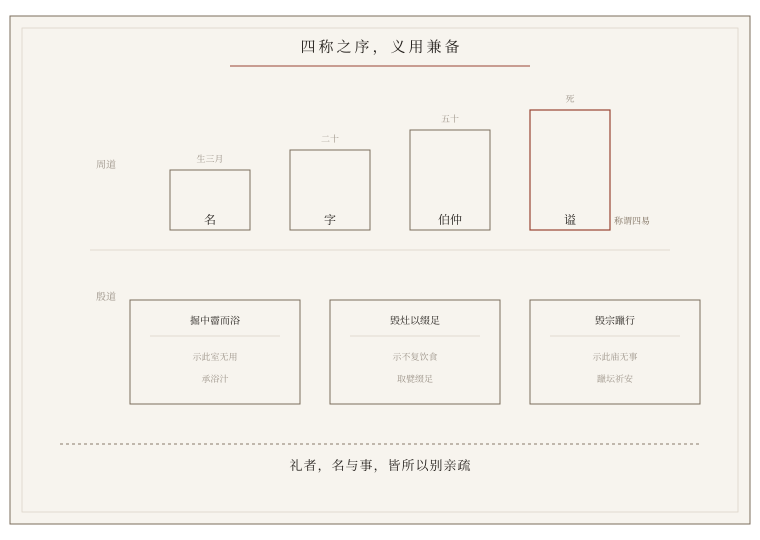

檀弓上 · 三·六十一 · 第 264 课
幼名，冠字，五十以伯仲，死谥——注家说这四者是「周道」。掘中霤而浴、毁灶以缀足、及葬毁宗躐行出于大门——这三者是「殷道」。末一句「学者行之」，是记者说：学于孔子的人照这样行。
说什么事：一节里装两套礼。上半讲人一生怎么被称呼，下半讲一个人死了，屋里、灶上、庙门各要动一处。
落在哪一层：礼，兼及礼数与礼意。论「质文二道，并行而不相废」。
为何编在此位：此为卷七之末、卷八之首。卷七以「无文之礼」收（263），此节以「殷周二道」收：礼之极处是人，人之所自起是名。
【经】幼名，冠字，五十以伯仲，死諡，周道也。絰也者，實也。掘中霤而浴，毀灶以綴足，及葬，毀宗躐行，出於大門，殷道也。學者行之。
【注】绖也者，实也，所以表哀戚。明不复有事于此。周人浴不掘中霤，葬不毁宗躐行。毁宗，毁庙门之西而出，行神之位在庙门之外。学于孔子者行之，傚殷礼。
【疏】此一节论殷、周礼异之事。「幼名，冠字」者，名以名质，生若无名，不可分别，故始生三月而加名，故云「幼名」也。「冠字」者，人年二十，有为人父之道，朋友等类不可复呼其名，故冠而加字。年至五十耆艾转尊，又舍其二十之字，直以伯仲别之，至死而加谥。凡此之事，皆周道也。然则自殷以前，为字不在冠时，伯仲不当五十，以殷尚质、不讳名故也。又殷以上有生号，仍为死后之称，更无别谥，尧、舜、禹、汤之例是也；周则死后别立谥，故总云「周道」也。《士冠礼》二十已有「伯某甫、仲叔季」，此云「五十以伯仲」者，二十之时虽云「伯仲」，皆配「某甫」而言；五十之时直呼伯仲耳。《礼纬·含文嘉》云「质家称仲，文家称叔」，周代是文，故有管叔、蔡叔、霍叔、康叔、聃季等，末者称季是也。○「掘中霤而浴」以下三句明殷礼也，每一条义兼二事也。中霤，室中也，死而掘室中之地作坎：一则言此室于死者无用，二则以床架坎上，尸于床上浴，令浴汁入坎，故云「掘中霤而浴」也。○「毁灶以缀足」者，亦义兼二事：一则死而毁灶，示死无复饮食之事，故毁灶也；二则恐死人冷强，足辟戾不可著屦，故用毁灶之甓连缀死人足，令直可著屦也。○「及葬，毁宗躐行，出于大门」者，亦义兼二事也。「毁宗」，毁庙也；殷人殡于庙，至葬柩出，毁庙门西边墙而出于大门。所以然者，一则明此庙于死者无事，故毁之也；二则行神之位在庙门西边，当所毁宗之外，若生时出行，则为坛币告行神，告竟车躐行坛上而出，使道中安稳如在坛；今向毁宗处出，仍得躐此行坛，如生时之出也。故云「毁宗躐行，出于大门」也。○「殷道也」者，道，礼也，上三句皆是殷礼也。○注「周人浴不掘中霤」者，用盘承浴汁也，是以《丧大记》「浴水用盆，沃水用枓，沐用瓦盘」；云「葬不毁宗躐行」者，周殡于正寝，至葬而朝庙，从正门出，不毁宗也，故《士丧礼》不云「躐行」也；然周家亦不毁灶缀足，而郑注不云者，以周缀足用燕几，其文可见，故此不言耳。
幼名 生三月而加名。疏「名以名质」。
冠字 二十而冠，冠而加字。字以尊名。
五十以伯仲 五十以后舍字，直以伯仲相别。
死谥 死后加谥，易其名。
周道 周之礼。疏「道，礼也」。
绖也者，实也 绖是「实」——哀戚之实事，非虚饰。
中霤 室中。掘室中之地作坎。
毁灶以缀足 毁灶，取甓连缀死者之足，使直可著屦。
毁宗躐行 毁庙门西边墙，车躐行神之坛而出。
殷道 殷之礼。
学者行之 注「学于孔子者行之，傚殷礼」。
小时称名，冠时称字，五十以后称伯仲，死后称谥——这是周之礼。绖这个东西，是实的，用来表哀戚。
在室中掘坎而浴，毁了灶拿它的砖缀住死者的脚，到出葬时毁了庙门西边的墙、让车从行神坛上碾过去、出大门——这是殷之礼。学于孔子的人，就照这样行。
一节两半，上半是「人怎么被称呼」，下半是「人死了怎么被处置」。两半都在讲同一件事：礼是把关系一寸一寸地调准。
上半四个称谓，是四次「换人」：三月有名，名以别之；二十有字，字以尊之，朋友不得复呼其名；五十舍字称伯仲，连字也不必全称；死而有谥，则以一字定其一生。疏说得狠：「名以名质，生若无名，不可分别」。名是为分别，字是为敬，伯仲是为尊，谥是为定。
下半三句，「每一条义兼二事」：掘中霤，既示此室于死者无用，又承浴汁；毁灶，既示不复饮食，又取甓缀足；毁宗躐行，既示此庙于死者无事，又借行神之坛祈一路安稳。一个动作办两件事，义与用不分。
末三字「学者行之」，注一句「学于孔子者行之，傚殷礼」。孔子殷人，其丧礼犹存殷法，弟子学之而行。前面讲了几十条周道，末一句说的是：礼不从书上来，从人行上来。
第一层 四称之序 名、字、伯仲、谥，四者不是四种叫法，是四个「人我距离」。三月命名，是让这孩子从「无可分别」变成「可分别」；二十加字，是让同龄的人不能再直呼其名；五十称伯仲，是让字也不必全称；死而有谥，是把一生收在一个字里。礼在这里做的事情，是把「亲」与「敬」一寸一寸分开。
第二层 质与文 殷尚质，故不讳名：字不在冠时，伯仲不当五十，有生号而无别谥，尧、舜、禹、汤即是。周尚文，故四者皆立。这不是两套谁高谁低，是两套对「人如何被称呼」的答案：一套省事，一套省敬。
第三层 义用兼备 疏解殷之三句，句句「义兼二事」。这一层是古礼最容易被今人看漏的地方：我们以为仪式只是「表示」，古人却让它同时办事。掘坎既是表态，也是接浴汁的容器；毁灶既是表态，也是缀足的材料。义与用不分，故礼不虚设。
第四层 学者行之 此句把前面所有的话落到人身上。周道是「文」，可考可述；殷道是「行」，在孔子身上还活着。弟子学的是这个还活着的东西。注「傚殷礼」三字极准：不是复古，是效其所存。
与今日何干 称呼是礼的最小单位。乳名、学名、职称、谥号（今日虽无谥，而有悼词与评价），每一次更换都在调整一个人与世界的关系。我们今日的问题往往不是「称呼太少」，是「称呼太乱」：该敬的直呼其名，该亲的却称官衔。此节给的尺是：称呼的每一次变化，都该对应一次关系的真实变化。
| 左 | 右 |
|---|---|
| 幼名 | 名以别之 |
| 冠字 | 字以尊之 |
| 五十以伯仲 | 舍字而尊之 |
| 死谥 | 一字定其一生 |
| 掘中霤 | 示无用／承浴汁 |
| 毁灶缀足 | 示不复食／缀足令直 |
| 毁宗躐行 | 示庙无事／躐坛祈安 |
| 殷质周文 | 两套答案，非优劣 |
画一间老屋的内景，视点略俯。室中地上掘开一个方坎，坎上架一张木床，床上卧一人（衾覆盖至胸），床下一道水痕流入坎中。屋左一灶已被拆去半边，几块砖码在床脚边。屋后一道庙门，门西的墙缺了一段，门外地上有一方矮坛，坛前辙痕直过。不写文字、不画人面细节。赭色只用在坎沿的一圈土色与门口那段缺墙的断口。
